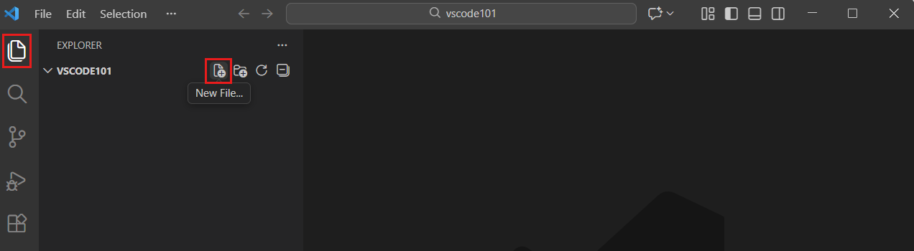

LAB 01 / FRIDAY 2 OCTOBER 2026
A place becomes a webpage
How can a detail from your own life shape a digital work?
Morning · 08:15–10:15 · 120 minutes
LOCKED QUEST
This lab opens on .
You can preview the topic above. Its check-in, activities and timetable unlock automatically on the scheduled date, at midnight in Europe/Oslo.
← Back to the lab mapToday’s timetable · includes one 15-minute break: 09:00 for the morning group, 15:00 for the afternoon group
- 08:15–08:200–5 min
Welcome and choose a small goal
Open your own project.
Details & help
Do: Open your own project. Choose one thing you would like to understand or move forward today.
- 08:20–08:305–15 min
One useful example
Watch for the part that could help your project.
Details & help
Do: Watch for the part that could help your project. You do not need to rebuild your work in another tool.
- 08:30–08:4015–25 min
Plan and settle in
Write a small goal and open the relevant files.
Details & help
Do: Write a small goal and open the relevant files. Ask for clarification or begin working when ready.
- 08:40–09:0025–45 min
Own-project time: A page, image or small interaction in your own project
Choose one change in your existing project: structure, readability, a reveal or the way your own material appears.
Details & help
Do: Choose one change in your existing project: structure, readability, a reveal or the way your own material appears. If you need a starting point, use the HTML/CSS example. Work at your own pace.
- 09:00–09:1545–60 min
Break: step away
Save and take a real break.
Details & help
Do: Save and take a real break. Stretch, get water or leave the screen.
- 09:15–09:4560–90 min
Own-project time: continue and test
Continue your project.
Details & help
Do: Continue your project. Use the HTML/CSS guide only where it helps. In the final five minutes, ask a partner to try the change and make one useful repair.
- 09:45–10:0090–105 min
Extension: more project time
Keep working on the same goal, read a useful source or ask for help.
Details & help
Do: Keep working on the same goal, read a useful source or ask for help. You do not need to add another feature.
- 10:00–10:10105–115 min
Save, screenshot and upload
Save your work, capture the required evidence, upload to the assigned task and check confirmation.
Details & help
Do: Save your work, capture the required evidence, upload to the assigned task and check confirmation. Note any blocker accurately.
- 10:10–10:15115–120 min
One next step
Write one decision or discovery and one manageable next step.
Details & help
Do: Write one decision or discovery and one manageable next step. Keep your files and notes.
Step 1 of 3 · Check in
PRIVATE THOUGHT / BEFORE WE BEGIN
Before you came here, a screen already knew you.
What did it show you first this morning? A notification, a weather icon, a face, a colour. Hold that image for a second. Today it becomes the first idea for your page.
Example: “My lock screen showed a grey rain icon before I opened my eyes. Today I want a page that changes colour like the morning.”
DIKULT105 / LAB PASS / DAWN FEED
Private thought kept off the record
TASK COMPLETED · READY TO SUBMIT
Finish your check-in: download the card or take a screenshot, then upload it to the attendance task in MittUiB. Creating the card here does not send it or record attendance.
Your name, sentence and colour are kept only in this browser tab so you can return from a guide. Only write on the pass what you are happy to hand in. Close the tab when you finish on a shared computer.
Create and download your pass before opening a guide. Your pass stays available in this browser tab when session storage works.
Next: start your experiment →Practice: CSS & colour studio
Learn the technique hands-on, with instant feedback. Optional, but the fastest way in.
TECHNIQUE 01 / CSS & COLOUR
Colour is never neutral.
Style your place.
Before anyone reads a word, your page has already said something. In this studio you find where your code lives, read one CSS rule, and choose a colour on purpose.
01 / WHERE YOUR CODE LIVES
Open your folder in VS Code.
You write CSS in Visual Studio Code (VS Code), a free code editor. Your project is a folder, not a single file. Always open the whole folder, so VS Code and Live Preview can find every file.
- Did the setup guide? Use that folder, for example
my-future-world. Create a new file calledstyle.cssnext toindex.html, copy in the starter CSS, and paste<link rel="stylesheet" href="style.css">inside the<head>ofindex.html. Starting fresh? Download the Lab 1 starter and unzip it: the foldermy-place-pagealready has both files. - In VS Code choose File → Open Folder… and select your project folder.
- In the Explorer on the left, click
style.css. This is where you will work today. - Open
index.html, right-click in the editor and choose Show Preview (Live Preview). Keep the preview beside your code.
First time on this computer? Follow the setup guide to install VS Code and Live Preview, then come back.
EXPLORER
▾ MY-PLACE-PAGE
<> index.html
# style.css
1body {
2 max-width: 44rem;
3 font-family: system-ui, sans-serif;
4 color: #18242d;
5 background: #f3f0e8;
6}style.css (shortened). Lines 4 and 5 decide the mood of the whole page.index.html
Says what the page is: the heading, your sentence, the hidden question.
# style.css
Says how it feels: colour, type, space.
The two files are joined by one line in the <head> of index.html: <link rel="stylesheet" href="style.css">. Think of it as the cable between them. If the file name or folder is wrong, the page loses its style.
02 / READ ONE RULE
Every CSS rule has the same shape.
This is a real line from your starter. Click each part to see what it does.
Selector: body chooses which HTML to style. body means the whole visible page. h1 would mean only your heading, p every paragraph.
Braces { } hold all the instructions for that selector.
Property is what you change: color is the text colour, background is the colour behind it.
Value is how it changes. #f3f0e8 is a warm off-white.
Semicolon ; ends one instruction. Forgetting it is the most common reason CSS silently stops working.
HOW TO READ A HEX CODE
#f3f0e8
A hex code is three pairs: red, green, blue. Each pair goes from 00 (none) to ff (full). #ff0000 is pure red, #000000 black, #ffffff white. #f3f0e8 has almost full red, green and blue, with a little less blue, which is why it feels warm, like paper.
LEARN IT PROPERLY ON W3SCHOOLSCSS syntax ↗Selectors ↗Hex colours ↗
03 / WHY COLOUR SPEAKS
On screens, colour is a language we already know.
You have spent years learning what interface colours mean, without anyone teaching you. Designers use that shared knowledge on purpose. So can you.
Red badge
Notifications, errors, live. Red asks for your attention now. Apps use it because it pulls you back in: colour as part of the attention economy.
Link blue
Early web browsers made links blue, and we still read blue as “click me”. Banks and social platforms lean on blue to look calm and trustworthy.
Dark mode
Night, privacy, a phone in bed. Dark screens feel intimate and late. They can also feel like a terminal, a hacker, a secret.
Soft pastel
The “aesthetic” feed. Pastels signal a mood, an identity and a community. Choosing a palette online is often choosing who you belong with.
Meaning is cultural, not universal. White can mean a wedding in one place and mourning in another. Green can mean nature, money, “go” or a political party. Ask: who is reading this, and what have they learned?
Contrast decides who is included. If text and background are too close, people with low vision, tired eyes or a bright screen outside cannot read your page. Aim for a contrast ratio of at least 4.5 : 1, and never let colour be the only way something is explained.
What should your place feel like before anyone reads a word?
04 / COLOUR STUDIO
Try colours on your page before you touch the code.
This preview uses the text from your starter. Choose a mood or pick your own colours. The CSS below updates as you go, ready to paste.
my-place-page / index.html
A place I know
I notice the sound of rain at the bus stop.
▸ What if this changes in the future?
CONTRAST
14.9 : 1 · Readable
4.5 : 1 or more is readable for normal text.
Find more colours: free hex colour picker at htmlcolorcodes.com (opens in a new tab)
# style.css / paste inside body { }
color: #18242d;
background: #f3f0e8;05 / CSS REACTOR
Write real CSS. Power up the reactor.
This is the actual style.css of your Lab 1 page. Type in the editor and the page on the right changes as you type. Light all four missions to reach full power.
REACTOR / STYLE.CSS
POWER 0%
- Power onChange the page background to a new colour.
- Give the heading a voiceAdd an
h1rule with its own colour. - Readable for everyoneKeep text and background at 4.5 : 1 or more.
- Break a convention on purposeChange a font, the letter-spacing or the capitals.
# style.css
Enable JavaScript to power the reactor. You can still copy the code above into VS Code.
06 / DO IT IN VS CODE
Now make the change for real.
- Go back to
style.cssin VS Code. - Inside
body { }, replace the value aftercolor:and afterbackground:with your two hex codes. Keep the#and the;. - Below the
bodyrule, write your first rule of your own. Give only the heading its own colour:h1 { color: #b3122e; } - Save with Ctrl + S (Mac: Cmd + S). Live Preview updates on its own.
- Before you look at the preview, say out loud what you expect to change. Then check.
Nothing changed?
- Not saved. A dot on the file tab in VS Code means unsaved changes. Press Ctrl/Cmd + S.
- Missing
#or wrong length. A hex code is#plus exactly six characters:#b3122e. - Missing
;or}. One missing character can stop the rest of the file. VS Code underlines it in red. - Wrong folder.
style.cssmust sit next toindex.html, and the<link>line must sayhref="style.css".
KEEP GOING ON W3SCHOOLSCSS tutorial ↗CSS colours ↗Colour picker ↗
07 / SAY WHY
A colour choice is a claim. Write it down.
Finish the sentence. It goes straight into your experiment note below, so you can use it when you submit.
Optional stretch: make a second version of the same page with the opposite mood. Ask a classmate what each version tells them, before you explain anything.
Your project
The three milestones and the short note you need to finish this lab and unlock Save & submit.
YOUR WORKBENCH
Make a place
Turn an observation into a webpage.
What detail from a place you know could become a colour, a sentence or a layout?
Open the setup guide: VS Code + Live Preview ↗Already working on something? Apply these steps to your own project. No AI required.
Your experiment checklist
Complete all three milestones and add a short note to unlock Save & submit. Ask your lab assistant if you need help or an adapted task.
Enable JavaScript to save a personal checklist on this device. The guides and schedule work without it.
Clear this experiment’s ticks and note on this device?
Experiment not behaving? Open the help drawer.
Start small: describe what you expected, then what actually happened. Change one thing and try again.
Ask for help: “Can we look at this together?” Nobody is expected to know everything.
Need a pause? Take it. Your progress stays here when storage is available. The scheduled break is at 09:00 (morning) or 15:00 (afternoon), in the plan below.
Examples and guides
Step-by-step guides and official screenshots. Open it when you need it.
Open practical guides and official screenshots
- VS Code setup with real screenshots ↗
- CSS & colour studio ↗
- Working starter page ↗
- Chrome: inspect a real element ↗

Complete all three milestones and write a project note (at least 10 characters) to unlock the last step.
Next: save & submit →LAST STOP / LAB 01
Keep your work. Hand in your evidence.
- Save your project files. Keep a copy somewhere you can find again.
- Submit your lab pass in MittUiB. Use the current MittUiB task. If the current task asks for a project screenshot too, include it.
- Check that your upload succeeded. A pass generated here is not an attendance record until you submit it.
Need your pass? Go back to check-in.
Your experiment checklist and notes are saved in this browser when storage is available.
Return to the lab map ↑This is your own confirmation. The site cannot verify your MittUiB upload.
Save, submit & reflect
Minimum practice outcome
- A small personal project goal was attempted and the current version is saved.
- The student can explain one choice, discovery or blocker and one next step.
- Completion evidence matches the actual MittUiB task; this project-centred route does not waive its requirements.
These are proposed practice checkpoints. Follow the actual compulsory task for what must be submitted and passed.
Completion screenshot
Show the relevant progress in your own project, or the working starter exercise if you used it. Use the exact evidence format requested in MittUiB; do not present an unfinished required task as complete.
Upload before the lab ends. Use the assigned MittUiB task and check its confirmation. Keep the editable files separately.
Your own process note
I noticed ____. I used ____ to make the visitor experience ____. My test showed ____.
What you can take from this lab
Leave with: Visible, saved progress on the student’s own project, using today’s technique where relevant; the starter exercise is available for anyone who needs it.
Connect to the course: Digital Creativity: creative practice develops through materials, tools, precedents and other people. Connect a deliberate design choice to the experience you want to create.